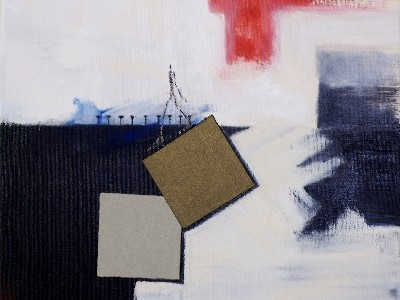
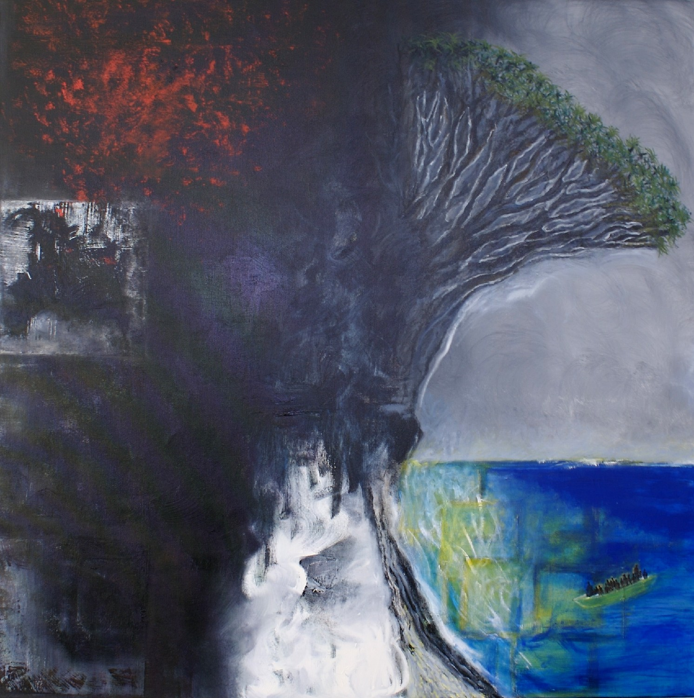
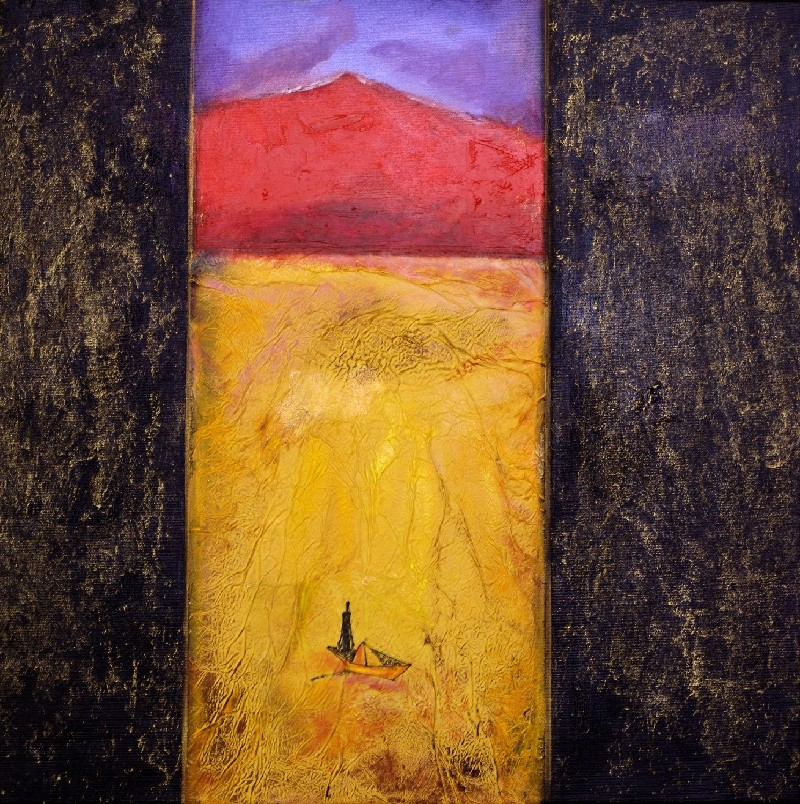
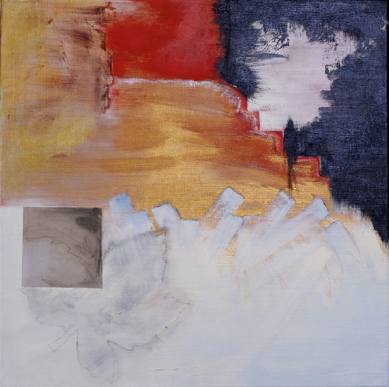
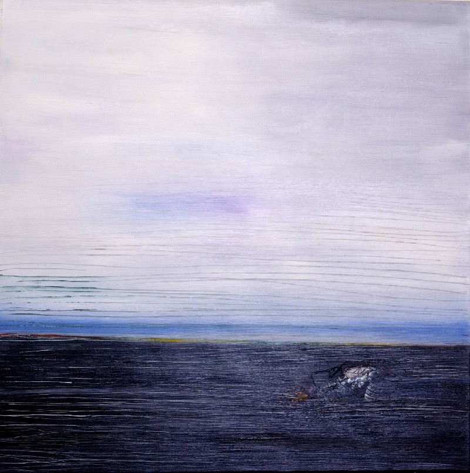
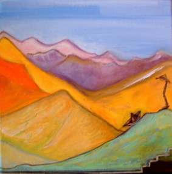

Sur le sentier du dragonnier (2008)
Caminar siguiendo lo vegetal, en el universo místico del drago, entre memoria y metamorfosis.

Dragonnier couverture

Le vieux dragonnier

Le vieux volcan

Au-dessous du volcan

Sable noir

Annapurna
« El sendero del drago es también el sendero de la memoria, de la transformación… »